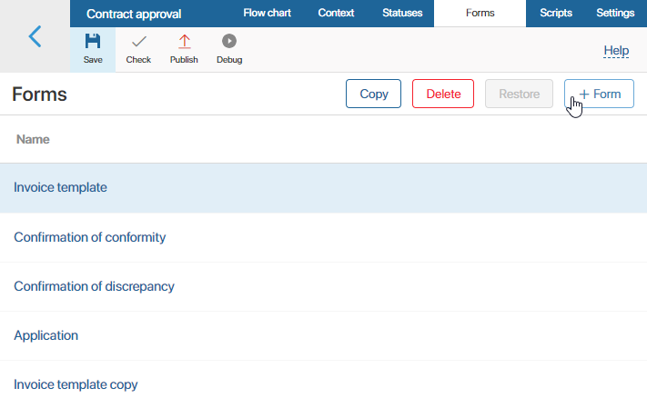
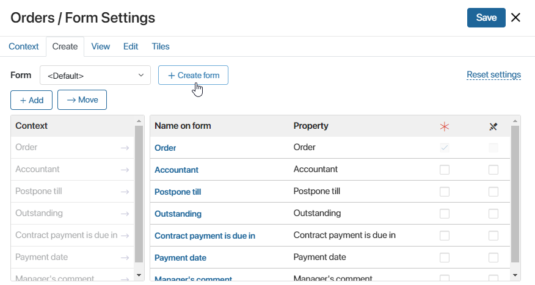
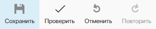
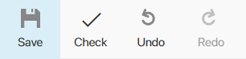

If the functionality of a standard form is not sufficient, you can create your own template using the form editor. It allows you to add new buttons and widgets, move fields, etc. You can create form templates for tasks, start events, approval and information tasks, and instance summary pages. Templates you add can be reused.
Create a new template
There are several ways to create a form template:
- On the business process modeling page, open the Forms tab in the upper right corner and click +Form. In the window that opens, enter the template’s name and click Save.

- In a business process task, start event, Approval or Send Document/App Item activity, open the task settings window and go to the Form tab. In the upper left corner, next to the Form caption, click the <Default> link. After that, the +Create Form button will appear.

Edit a template
Form templates are created in the interface designer that consists of several tabs:
- Template. This tab shows the modeling canvas. Here you can modify the form template: change the buttons, create new ones, or add widgets.
Moreover, you can make the form dynamic. Configure the widgets so that their behavior depends on the user’s actions. Read more about this in the Dynamic forms article.
- Context. Here you can add properties that can be placed on the template field and used when writing scripts. To create a property, click +Add and enter the property’s parameters.
- Scripts. On this tab, you can write a script to modify widget behavior, for example, to show a pop-up window when the user hovers over a certain area of the form or page. Read more about it in Scripts in widgets and BRIX TS SDK.
- History. This tab lists all published versions of the configured template, specifying the author, time, and the comment left at publication. To restore one of the previously published versions of the template, select it in the list, click Apply Version, and confirm the action. To make the form appear in all new instances of the business process, publish the process.
- Settings. On this tab, you can:
- Hide a widget with validation errors in the form of a custom task or a start event in the process.
- Specify the functions from the scripts that you want to run when displaying the widget and validating the form.
- Allow global constants and widgets from workspaces to be used in scripts.
- Files. On this tab, you can add libraries and custom functions in JavaScript to call them in custom scripts.
Read more about these tabs in the Interface designer article.
Add widgets to the template
A widget is an interface element that serves a specific function, for example, uploading a file, displaying instructions, showing the activity stream, listing users, etc.
You can add a widget to a form in several ways:
- On the top panel of the form template, click +Button.
- On the sidebar of the form template, click +Widget.
- Drag a widget from the side panel of the interface designer to the modeling canvas.

After adding a widget, specify its parameters in the settings window and save the changes.
Note that different widgets are available for the top panel, sidebar, and main area of the form. For example, only the Button, Map, and Task progress widgets can be placed on the top panel of a task form.
Read more about adding widgets in the Form templates article. Each widget available in the system is described in the Widget types section.
Interface designer toolbar
In the toolbar at the top of the interface designer page, you can find buttons to work with the template:

- Save. Save the form template you configured to apply the changes to task forms or the start event of the business process.
- Check. Click this button to check the widgets added to the form for errors. If an error is detected, for example, the script that defines the widget function is written incorrectly, you will see a notification.
- Undo. Undo the latest action.
- Redo. Redo the latest action you have undone.
Actions with the template
On the process modeling page, go to the Forms tab and select a previously created template from the list. The following actions will become available:
- Copy. Create a copy of a previously created template to edit it and use as the form for another task. After clicking the button, enter the new template’s name in the window that opens and click Save.
- Delete. Delete a template if it is no longer used in the process. A deleted form’s name is crossed out in the list of all form templates.
- Restore. Select a deleted form from the list and restore it.
Found a typo? Select it and press Ctrl+Enter to send us feedback